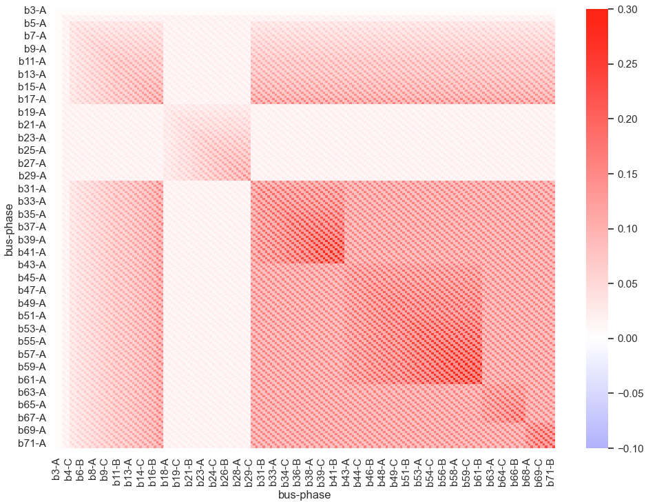
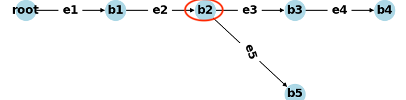

5.2 Bus Resistance Matrix
- Step-down transformer is ignored, so bus 1 is not included.
- Bus 2 is the root.
- There are 69 PQ buses, and there are 207 channels.
- 207 rows and 207 columns.

Lowest Common Ancestor Problem
Entry \((i, j)\) is the sum of edge resistances in the common path to the root of bus \(i\) and \(j\). That is sum of edge resistances in the path from the root to the lowest common ancestor (LCA) of bus \(i\) and \(j\): \[ R_{i, j}=\sum_{k \in U_{i} \cap U_{j}} R_{\text {edge }, k} \] where \(U_{i}\) is set of edges on path from the root to bus \(i\).
- BRM can be calcualted efficiently using LCA for all pairs of buses.
- The pattern can be used in future work.
For example,

- LCA of b3 and b5 is b2. Entry for b3, b5 is \(R_\text{e1} + R_\text{e2}\)
- LCA of b4 and b5 is still b2. Entry for b4, b5 is still \(R_\text{e1} + R_\text{e2}\).